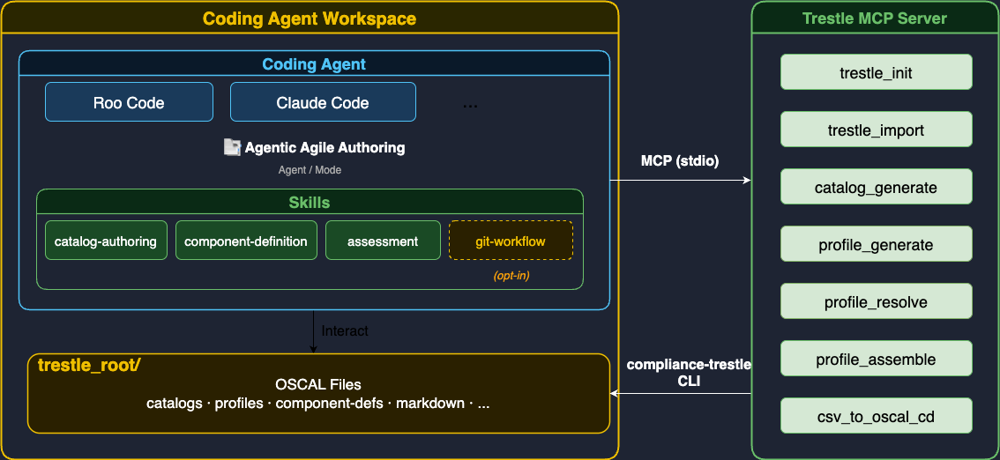

Architecture
High-Level Overview

Agentic Agile Authoring is an ecosystem of portable skills for OSCAL compliance authoring — from NIST catalog customization through component definition to assessment result generation. Each skill is a unit of authoring know-how that a coding agent (Claude Code, Roo Code, opencode, …) loads and follows; there is no single orchestrator persona. Orchestration across skills is expressed by demos (see below).
A skill handles authoring work through direct file editing, content-authoring assistance, and —
where needed — OSCAL tooling via the Trestle MCP Server.
A skill that requires an MCP server declares it in an apm.yml sidecar; nothing about the
server is hardcoded into an agent.
The coding agent workspace doubles as the trestle_root — the directory compliance-trestle
uses to store and manage OSCAL artifacts.
Request flow:
- The user asks the coding agent to perform a compliance authoring task in natural language.
- The harness activates the appropriate skill (
catalog-authoring,component-definition,assessment, orgit-workflow) directly from its description. - The skill guides the agent through the task — editing files, assisting with content, and calling Trestle MCP tools as needed.
- When a Trestle MCP tool is called, the server translates it into a
compliance-trestleCLI command run as a subprocess. - The CLI reads from and writes to the
trestle_root/directory inside the workspace.
Installation & MCP wiring
Installation is handled by compliance-authoring-skills, a thin wrapper (in tools/) over
OpenAPM (apm-cli). APM is the engine — it copies the
skill package into each harness's native dir and wires the skill's declared MCP servers into
that harness's native MCP config, with a lockfile and non-destructive uninstall/prune. The
wrapper adds only what APM lacks:
- Selection —
--skill/--exclude/--demo <name>resolve to a set of skill packages (--demoreads theskills:set fromdemos/<name>/README.md); APM has no concept of our demos. - Stable UX + prereq policy — hides APM's project mechanics and checks the baseline
uv. - Custom-harness (MyHarness) deployment — APM's target set is closed, so for a custom harness the wrapper reuses APM's target-agnostic resolve/normalize as a library and does the deployment itself.
graph LR
A["compliance-authoring-skills install --target T"] --> B["APM: resolve apm.yml<br/>+ normalize dependencies.mcp"]
B --> C{"T known to APM?"}
C -->|"claude / opencode / …"| D["apm deploys:<br/>skill dir + native MCP config + apm.lock.yaml"]
C -->|"myharness"| E["our deployer:<br/>copy skill + merge ~/.myharness/mcp.json"]Per-harness placement + MCP format is APM's (verified): Claude → .claude/skills/ + .mcp.json
(mcpServers); OpenCode → .agents/skills/ + opencode.json (mcp.<name> = {type: local,
command:[…]}). A shared MCP server is pruned only when no remaining installed skill declares it,
and user-authored skills / user-defined MCP servers are never touched. Skill identity is the
directory name; "has it changed?" is APM's apm.lock.yaml content hash — no bespoke versioning.
See the decision log (D4) for why we adopt APM.
Skills
Seven skills cover the OSCAL compliance authoring lifecycle plus framework onboarding. The
lifecycle skills compose (catalog → component → assessment → POA&M); compliance-catalog and
compliance-mapping onboard a framework (PDF → catalog, catalog ↔ catalog) upstream of that chain.
All are invoked independently; a demo carries any ordering.
| Skill | Input | Output | MCP dep |
|---|---|---|---|
catalog-authoring |
NIST OSCAL catalog / profile URL | catalog.json, editable Markdown |
trestle |
component-definition |
Catalog or profile + component description | component-definition.json |
trestle |
assessment |
Component definition + scan results | Compliance assessment table (Markdown / OSCAL) | — |
poam-authoring |
Assessment result (failed findings) or FedRAMP .xlsx |
plan-of-action-and-milestones.json |
— |
compliance-catalog |
Compliance-document PDF (law / regulation / standard) | Validated catalog.json (+ excluded-units record) |
— |
compliance-mapping |
Two OSCAL Catalogs (source, target) | mapping-collection.json + HTML report |
— |
git-workflow |
Compliance documents in workspace | Baseline branch, review PR | — |
compliance-catalog / compliance-mapping use trestle as a local CLI/library for validation
rather than the MCP server, so they declare no MCP dependency.
Demos
A demo (demos/<name>/) is an end-to-end walkthrough over N skills, captured as a single
README.md: frontmatter declaring the skill set (used by --demo), a demo video, the install
steps, the prompts to give the agent in order (with what each produces), and uninstall. The
walkthrough itself is the spec; a run "passes" when it reproduces the described artifacts (e.g. the
generated catalog.json passes trestle validate). See catalog-to-assessment for the first
demo, and the Design Spec §4 for the model.
Trestle MCP tools (per-skill dependency reference)
The skills that declare the trestle MCP dependency rely on these tools from
compliance-trestle-mcp. Direct CLI
invocation is never used from within a skill.
| Tool | Used by skill | Description |
|---|---|---|
trestle_init |
catalog-authoring | Initialize a new trestle workspace |
trestle_import |
catalog-authoring | Import an OSCAL model from a URL or local file |
trestle_author_catalog_generate |
catalog-authoring | Generate editable Markdown from a catalog JSON |
trestle_author_profile_generate |
catalog-authoring | Generate editable Markdown from a profile |
trestle_author_profile_resolve |
catalog-authoring | Resolve a profile into a catalog with substituted parameters |
trestle_author_profile_assemble |
catalog-authoring | Assemble edited Markdown back into a Profile JSON |
trestle_task_csv_to_oscal_cd |
component-definition | Convert a CSV of control implementations into a Component Definition JSON |
These tool→skill rows are the reference behind the dependencies.mcp: [trestle] declarations in
the catalog-authoring and component-definition sidecars.